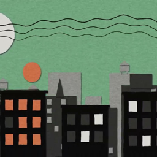
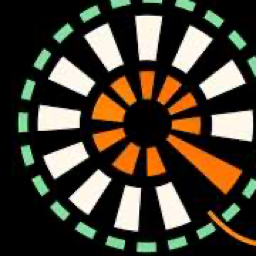
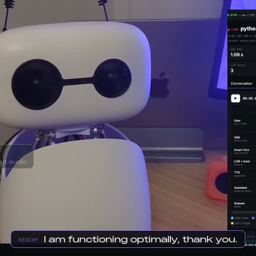
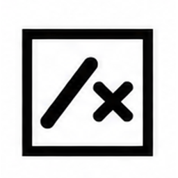

> ls -t ~/experiments

RIKKI-DAH!
Rikki is a dot, and he's got something to say. A short animated film made with Rust, fframes, tellers.ai and Suno.
Rustfframestellers.aiSuno

TANGLED FREQUENCIES
An experimental music video, made with Remotion and Suno.
RemotionSuno

S2SNOOP
Listen in on your voice agent: watch OpenAI Realtime and speech-to-speech sessions live, then replay them with aligned audio.
PythonOpenAI RealtimeSpeech-to-speech
